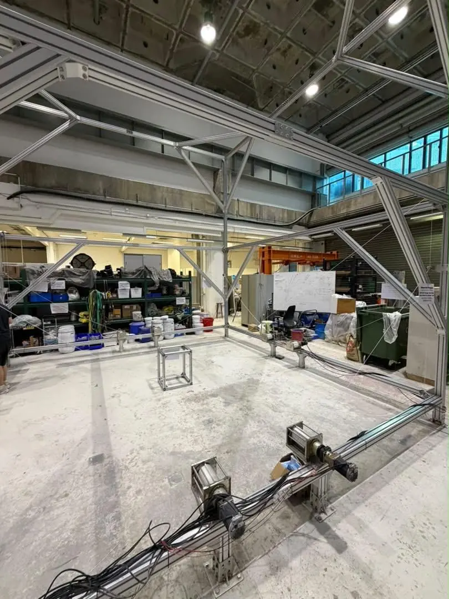
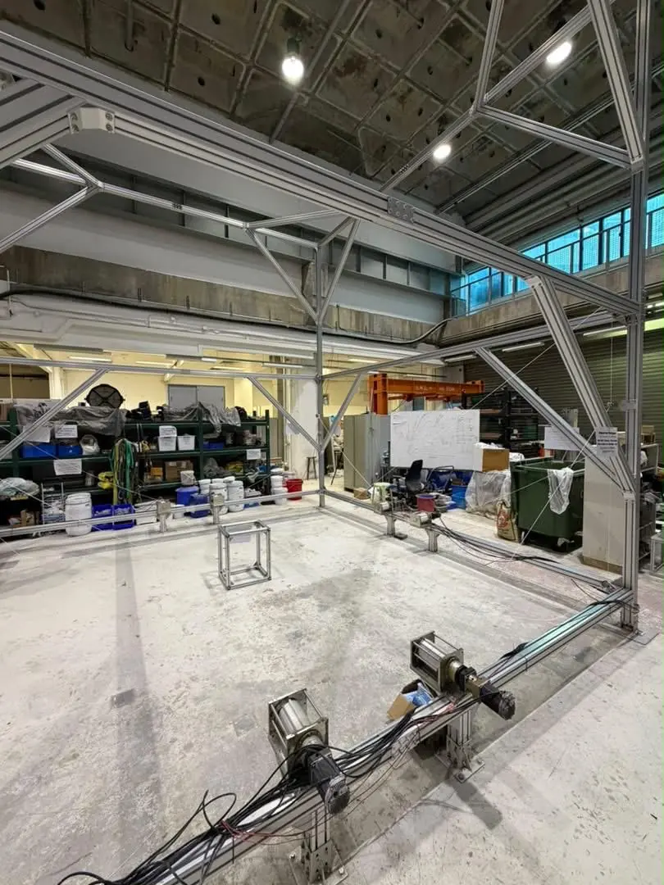
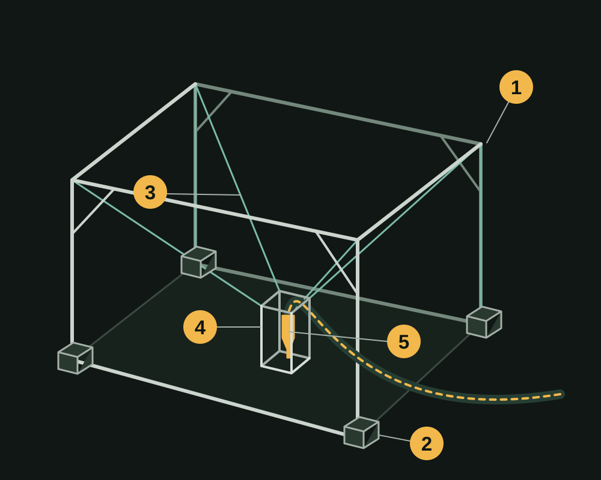
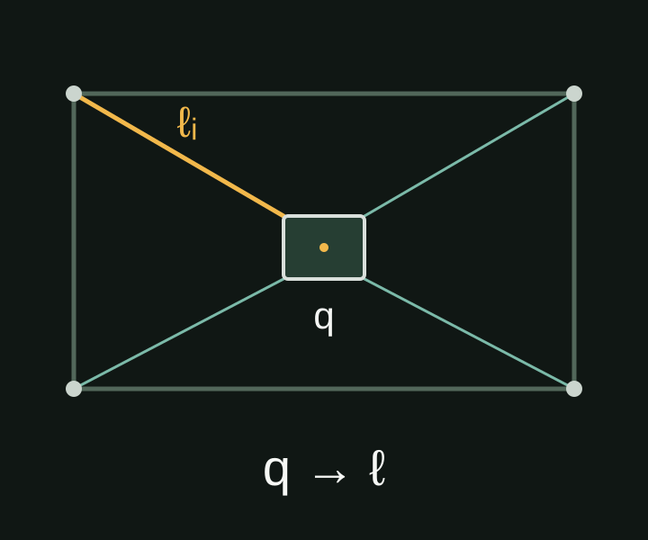
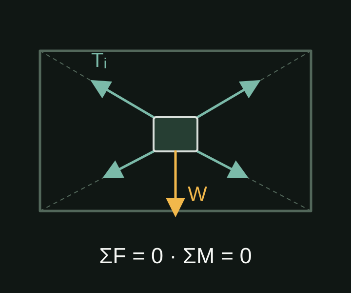

CDPR for 3D Concrete Printing
Cable-driven concrete printing · Ongoing
Project Overview
I am developing a cable-driven parallel robot for 3D concrete printing. My work spans robot design, assembly, software development, calibration, kinematic and static workspace analysis, and validation through dry runs and concrete-printing trials.

Project Details
From robot design to printing trials
The robot uses coordinated cables to position a printing tool within its workspace. My contribution brings together the mechanical system, software, and experimental work needed to move from an assembled robot to printing trials.
Two more views of the frame and drives


System arrangement

- 1 Support frame
- 2 Winch drives
- 3 Cables
- 4 Tool carrier
- 5 Example nozzle and feed hose
Kinematic and static workspace analysis
I study where the tool carrier can operate by considering both its geometry and the feasibility of the cable tensions. The diagrams below illustrate these two checks.

Relate the carrier pose q to cable lengths ℓ, then check reachability against geometry and cable-length limits.

Check whether cable tensions within their permitted limits can balance the specified load in force and moment.
These are conceptual diagrams with illustrative geometry and force directions, rather than calculated workspace maps.
Example nozzle integration

Selected Contributions
- Design and assemble the robot, integrating its mechanical and printing hardware.
- Develop the robot software and carry out system calibration.
- Perform kinematic and static workspace analysis to evaluate reachable poses and cable-tension feasibility.
- Carry out dry runs and concrete-printing trials as part of ongoing system development.
Research context
This robot development forms part of a wider research programme on sustainable 3D concrete printing. The programme brings together materials research, computational modelling, robotics, and automated printing; my work focuses on the cable-driven robot.